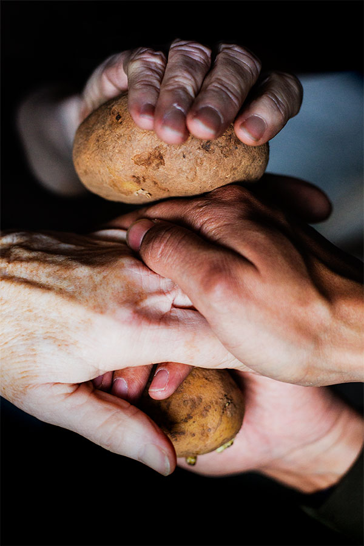
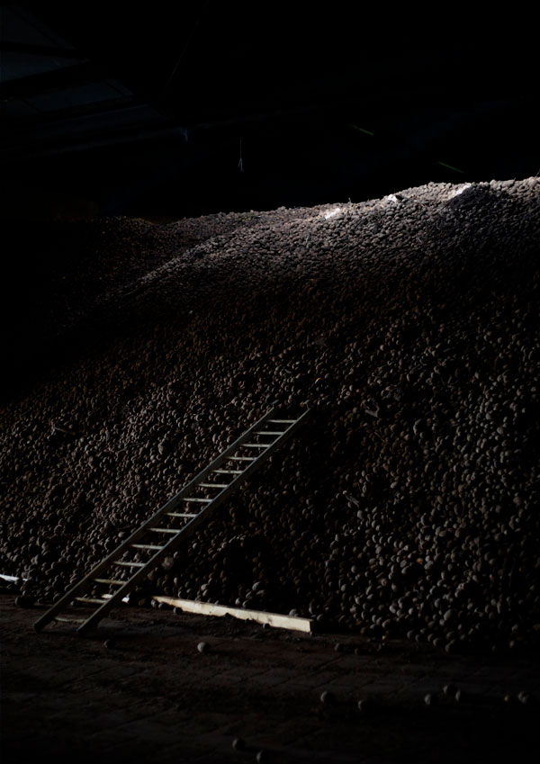

For you, potatoes are
A present to save you from starving

© Ana Núñez Rodríguez
A new plant to steal for your tribe

© Ana Núñez Rodríguez

The legend goes that thousands of years ago, an oppressed and starving population in the Andes begged the gods for help. Seeds were sent and soon beautiful plants began to grow. These attracted the oppressor’s attention and were immediately stolen. Little did they know that the real treasure was presented below ground: by digging up the nutritious tubers of the plant, the population thrived once more.
Continue